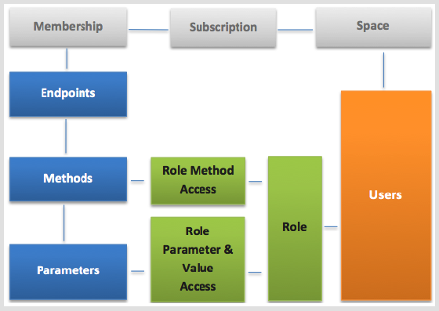

| |
GETTING STARTED
ACCESS CONTROL
The mydigitalstructure access control is based on a "common security language (CSL)" - which works as the gatekeeper for the "common functional language (CFL)" eg the endpoints and methods.
Every functional request and parameter can be protected via the access layer, by describing the access allowed for each user or group of users.
OAuth2.0 access uses this same common security language, by specification of the scope in an access request.
System administrators can manage access to any method within an endpoint which is included with the membership subscription for the space being secured.
You can also restrict access to parameters and specific values of parameters - eg user A can only see orders where status is approved. You can set global parameter level access that acts across all methods and endpoints.
In spaces that have single or limited users then the user parameter unrestrictedaccess can be set to yes - this then allows unlimited access to all subscribed endpoints and methods.
For spaces with many users and different levels of access then the following can be used to match the use case to the functional and access control.
OVERVIEW

|
|
|
|